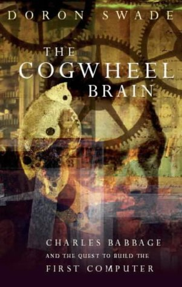
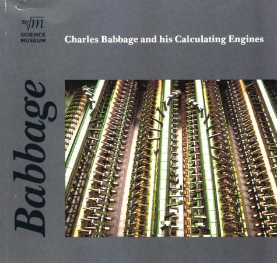
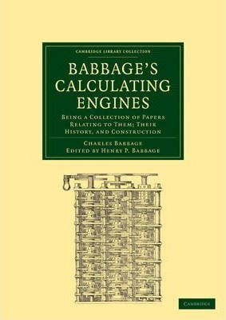
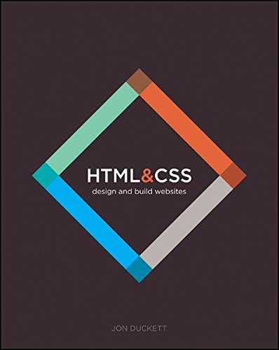

| Source |
Image |
| Padua, Sydney. The Thrilling Adventures of Lovelace and Babbage *The (Mostly) True Story of the First Computer. Pantheon Books, 2015. |
 |
| Woolley, Benjamin. The Bride of Science: Romance, Reason and Byron's Daughter. Pan Books, 2015. |
 |
| Swade, Doron. The Cogwheel Brain: Charles Babbage and the Quest to Build the Fist Computer. Little, Brown and Company, 2000. |
 |
| Swade, Doron. Charles Babbage and His Calculating Engines. Science Museum, 1998. |
 |
| Babbage, Charles, and Henry Prevost. Babbage. Babbage's Calculating Engines: Being a Collection of Papers Relating to Them, Their History, and Construction. Cambridge University Press, 2010. |
 |
| and for help designing the webite--
Duckett, Jon. HTML & CSS: Design and Build Websites. John Wiley & Sons, Inc., 2015. |
 |